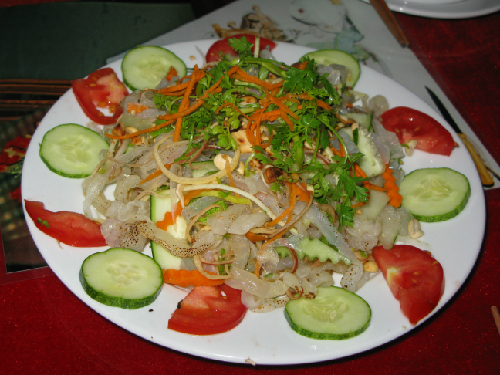

Ăn sứa mùa xuân dễ nhiễm độc tố

Mùa sinh sản của sứa kéo dài từ sau Tết Nguyên đán đến hè. Trong 3 ngày từ 5 đến 7/2, tại huyện Phú Ninh, Quảng Nam có 14 trường hợp bị ngộ độc
do ăn sứa và ốc ruốc biển (có nơi gọi là ốc chép).
Trước tình hình này, Cục An toàn thực phẩm đã khuyến cáo người dân không nên sử dụng sứa biển trong mùa sinh sản làm thức ăn vì vào mùa sinh sản,
sứa biển tích lũy nhiều độc tố hơn bình thường. Cục cũng khuyến cáo tuyệt đối không cho trẻ em ăn sứa biển và ốc ruốc để phòng ngừa tiêu chảy.
- Sứa biển là động vật không có xương sống, sống ở biển hay những nơi nước mặn. Sứa còn sống vốn chứa nhiều độc tố, dễ khiến người chạm phải bị dị ứng.
Độc tố của sứa biển khi xâm nhập vào cơ thể người có thể gây đau đầu, tức ngực... Nếu trong 15 phút sau khi chạm phải sứa, nạn nhân ngứa ở bàn tay, bàn
chân, trên da nổi ban đỏ từng vùng, nổi mày đay toàn thân, khó thở, đau bụng, tiêu chảy, chảy nước mắt, chảy nước mũi, vã mồ hôi hay hôn mê khó thở, cần
đưa ngay vào bệnh viện chống sốc.
- Nếu nạn nhân chỉ có phản ứng ngoài da, tại chỗ nổi rát, mẩn đỏ và ngứa nhiều thì mới bị nhiễm độc nhẹ và không nên quá lo lắng.
- Hiện nay, sứa vẫn được nhiều người chế biến thành các món gỏi, nộm, lẩu, canh, bún. Để đảm bảo an toàn, sứa phải được ngâm qua 3 lần trong nước muối và
phèn, khi thịt sứa chuyển sang màu đỏ nhạt hoặc vàng nhạt thì mới đem chế biến làm thức ăn.
- Còn ốc ruốc biển là loại ốc biển có kích cỡ loại nhỏ, màu sắc sặc sỡ, thường xuất hiện nhiều tại vùng biển miền Trung, đặc biệt Quảng Nam từ tháng 3
đến 7. Hiện nay, nguồn gốc của độc tố trong các loài ốc chưa được biết rõ ràng do chúng có tính chất khá phức tạp, không phải tất cả cá thể trong cùng một
loài đều mang độc tố và độc tố cũng rất khác biệt trong từng cá thể. Nguyên nhân của tính chất phức tạp này rất có thể độc tố của ốc cũng có nguồn gốc từ vi sinh vật cộng sinh. Vì vậy cục An toàn vệ sinh lưu ý người dân, trong quá trình chế biến cần ngâm với nước sạch nhiều lần và loại bỏ hết tạp chất để tránh gây ngộ độc.